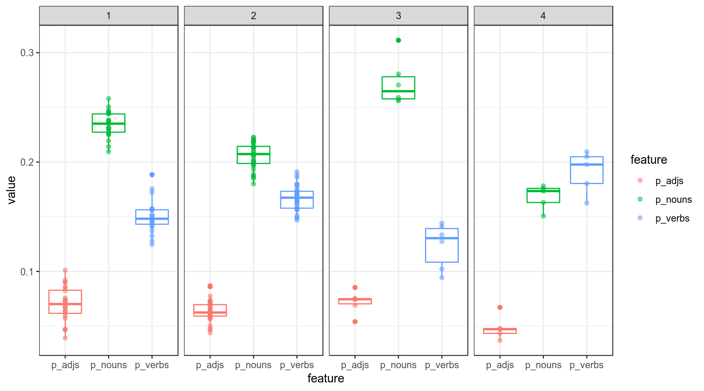

Hansard Text Analysis (Part 3)
In my previous articles (1, 2), I explored how we can use the R programming language and some great packages for text mining to investigate a British Parliamentary Hansard about withdrawing from the EU. Taking inspiration again from Julia Silge and David Robinson’s brilliant book on tidy text mining, this time we will try out more advanced analytical methods and get a bit more creative with the way we extract information from the text. Fair warning: this post is long.
Bigrams
Last time, we counted individuals words from each speech. Speeches are associated with categorical variables like the speaker, political party or gender. But why just split the text up into individual words? We know that some words naturally appear in groups (Mr. Smith, United Kingdom, European Union), so we might want to count groups of words- collectively known as “n-grams”. We are specifically going to count pairs of words, which are known to text-mining aficionados as “bigrams” (which I have a habit of reading as big rams, making big rams a big ram).
appearances_tib %>%
mutate(speeches = str_sub(speeches, 1, 100)) %>% # Shorten speeches for viewer's pleasure
head(3) %>% # display the first three rows
DT::datatable() # Formats the table nicely (many thanks to the DT package).In case you’ve forgotten since last time, here is a snippet from our main data table for the analysis scraped from the Hansard plaintext by yours truly. We’ve got columns for the speaker, party, gender, speech, party again (as a factor for plotting purposes, and with minor parties condensed into “other”) and the speech_id, which just describes the sequence speeches happened in.
Now let’s translate the words in those speeches into bigrams:
# Each row corresponds to a bigram from each speech now.
bigrams_tibble <- appearances_tib %>%
unnest_tokens(bigram, speeches, token = "ngrams", n = 2)
bigrams_tibble %>%
select(name, speech_id, bigram) %>%
head()## # A tibble: 6 x 3
## name speech_id bigram
## <chr> <int> <chr>
## 1 Baroness Bowles of Berkhamsted 124 my lords
## 2 Baroness Bowles of Berkhamsted 124 lords i
## 3 Baroness Bowles of Berkhamsted 124 i am
## 4 Baroness Bowles of Berkhamsted 124 am in
## 5 Baroness Bowles of Berkhamsted 124 in favour
## 6 Baroness Bowles of Berkhamsted 124 favour ofA bit of wrangling removes bigrams containing “stop words”, which are just commonly used words like “and”, “the”, “it”.
# For our analysis, we don't want bigrams like "I am".
# We're going to remove all bigrams that contain a stop word (see glossary).
# put words from each bigram into separate columns
bigrams_separated <- bigrams_tibble %>%
separate(bigram, c("word1", "word2"), sep = " ")
# filter out rows where either word from the bigram is a stop word
bigrams_filtered <- bigrams_separated %>%
filter(!word1 %in% stop_words$word) %>%
filter(!word2 %in% stop_words$word)
# we can then put both words back into the same column if we feel like it
# bigrams_united <- bigrams_filtered %>%
# unite(bigram, word1, word2, sep = " ")
# For now, we will count each pair of words
(bigram_counts <- bigrams_filtered %>%
count(word1, word2, sort = TRUE)) %>%
`[`(1:10,)## # A tibble: 10 x 3
## word1 word2 n
## <chr> <chr> <int>
## 1 noble lord 167
## 2 european union 155
## 3 lord lord 133
## 4 noble lords 88
## 5 article 50 76
## 6 noble friend 69
## 7 united kingdom 65
## 8 prime minister 61
## 9 eu citizens 59
## 10 devolved administrations 41Now we have a table containing the raw counts of every bigram in the Hansard. Take a peak and see which occur most. “Noble Lord” is a classic way of introducing another Lord in a speech in the House of Lords. Article 50 is a nice piece of writing detailing that the UK is going to leave the EU (sadface). Devolved administrations is another UK specific piece of lingo, meaning the governmental institutions of Wales, Scotland and Northern Ireland. Most of the other common bigrams are pretty self-explanatory.
Now let’s visualise the bigrams as a network, where each node is a word. The edges tell us which words are occur consecutively (i.e. as bigrams) and how often that bigram appeared (the strength of the line).
library(igraph)
bigram_graph <- bigram_counts %>%
filter(n > 5) %>%
graph_from_data_frame(set.seed(2019))
library(ggraph)
ggraph(bigram_graph, layout = "fr") +
geom_edge_link(aes(edge_alpha = log(n)), show.legend=F) +
geom_node_point() +
geom_node_text(aes(label = name), vjust = 1, hjust = 1) +
scale_edge_alpha(range = c(0.5,1)) +
theme_void() and [ggraph](https://github.com/thomasp85/ggraph)!).](../post/2019-02-11-text-mining-the-eu-withdrawal-bill-hansard-ii_files/figure-html/unnamed-chunk-5-1.png)
Figure 1: To get this network, I dropped every pair of words that appeared less than five times in the whole Hansard. Remaining words are placed on the graph and lines connected between the ones that occur together in pairs. The strength of the line tells us how often the pair of words were used. An algorithm sorts out the points so that connected nets of words are plotted close to one another and not overlapping with other nets (Thanks igraph and ggraph!).
There is a lot of cool stuff going on in this graph. We can see how by pairing up words, they arrange themselves into families of topics. There are personal declarative words used to describe other MPs. There are buzzwords/phrases (cliff edge, bargaining chips). There are words related to the underlying framework of Hansard debates (amendments and clauses/subsections). There are different words associated with different topics (industries, human rights).
From glancing at this graph, we can learn immediately the amendments discussed, industries that got mentioned and other issues that were discussed.
This might help guide further exploration…
Getting context on the Amendments
Perhaps we want to see more about how people speak about amendments. We can create a function which picks out sentences where our word of interest was used using some beautiful regular expressions.
wordInContext_sentence <- function(txt, word) {
# lower case full string vector (txt) and search term (word).
txt %>% str_extract_all(str_c("([^\\.\\?\\!]*\\s)", word, "(\\s|,|:|;)[^\\.\\?\\!]*"))
}amendment_tib <- appearances_tib %>%
mutate(amendment = str_extract(str_to_lower(speeches), "amendment [0-9][a-z0-9]+\\W"),
amendment = str_sub(amendment, end = -2)) %>% # grab an amendment mentioned and cut off trailing characters
select(-speeches) %>%
mutate(explicit_mention = !is.na(amendment)) # mark speeches that mentioned amendments for later
DT::datatable(head(amendment_tib))Now we are going to do something cheeky. Not every speech mentions an amendment. But maybe we can assume that the speeches that follow the previously mentioned amendment are also all referring to the same amendment as before. We can populate the amendment column by replacing missing values with the previous amendment mentioned. We’ll call these implicit mentions.
for (i in seq_along(amendment_tib$amendment)) {
if (!is.na(amendment_tib$amendment[i])) {
current <- amendment_tib$amendment[i]
}
if (is.na(amendment_tib$amendment[i])) {
amendment_tib$amendment[i] <- current
}
}We should do a quick sanity check to make sure that the number of implicit mentions of an amendment don’t stray too far from what we would expect based on the number of explicit mentions.
# count explicit and implicit mentions of each amendment
explicit_mentions <- amendment_tib %>%
filter(explicit_mention) %>%
count(amendment)
implicit_mentions <- amendment_tib %>%
count(amendment)
# sanity check
implicit_mentions %>%
left_join(rename(explicit_mentions, n_explicit = n)) %>%
ggplot(aes(n_explicit, n)) + xlab("N. explicit mentions") + ylab("N. implicit mentions") +
geom_point() +
theme_classic()Figure 2: Amendment explicit vs implicit mentions.
The numbers appear to be correlated, let’s continue using the implicit mentions so we can access more data. What can we do with this data? One thing I’m interested in is if peers from different parties talked about each amendment different amounts. We could just plot the raw number of times each amendment was mentioned by each party, but because we know speakers from some parties spoke more than others we will instead use the proportion of speeches made about each amendment by each party. (I also removed amendments that were mentioned in less than five speeches, and only look at the groups that gave a good number of speeches).
amendment_tib %>%
count(party, amendment) %>%
group_by(amendment) %>%
mutate(total_mentions = sum(n)) %>%
filter(total_mentions > 5) %>%
group_by(party) %>%
mutate(tot = sum(n), p = n/tot) %>%
filter(party %in% c("(CB)", "(Con)", "(Lab)", "(LD)")) %>%
ggplot(aes(party, p)) +
geom_col(aes(fill = amendment)) +
scale_fill_brewer(type = "qual", palette = 2) +
theme_classic()Figure 3: Cross-party proportion of mentions of for each amendment.
This is a pretty crude analysis, but is a nice summary of the importance of each amendment as a whole and to each party.
One thing we can’t see here is whether speeches supported an amendment or spoke against it.
I had a go at this, again using simple, maybe crude but otherwise transparent methods strung together. This involved pulling out sentences that included the word “amendment” to remove noise, then using sentiment analysis as a proxy for support or opposition. I wasn’t too happy with the result. Maybe this kind of classification is more appropriate for a supervised machine learning approach. My code is displayed below:
# Use a home-made function "words in context", to extract all the sentences from a speech containing a particular word.
targeted_sent <- appearances_tib %>%
mutate(sents_of_interest = map(speeches, ~unlist(wordInContext_sentence(str_to_lower(.), "amendment")))) %>%
select(name, party, speech_id, sents_of_interest) %>%
unnest() %>%
mutate(sent_id = row_number())
# Tokenise the sentences containing the word "amendment" for further analysis
targeted_sent %<>%
unnest_tokens(word, sents_of_interest)
# Using a sentiment library, score each sentence.
bing <- get_sentiments("bing")
my_stop_words <- c("lord", "lords", "noble", "baroness", "lordship", "minister", "amendment", "parliament", "eu", "uk", "government", "european", "union", "united", "kingdom")
# Count the number of positive and negative words in each "amendment sentence"
amendment_counts <- targeted_sent %>%
filter(!word %in% my_stop_words) %>%
inner_join(bing) %>%
group_by(speech_id) %>%
count(sentiment)
# Take those counts and classify the position of each sentence on the amendment.
amendment_position <- amendment_counts %>%
spread(sentiment, n) %>%
mutate(negative = ifelse(is.na(negative), 0, negative),
positive = ifelse(is.na(positive), 0, positive),
position = ifelse(positive>negative, "support",
ifelse(negative>positive, "oppose", "neutral")))
amendment_id <- amendment_tib %>% distinct(speech_id, amendment)
amendment_position %>%
left_join(amendment_id, by="speech_id") %>%
filter(amendment %in% c("amendment 9b", "amendment 21", "amendment 25", "amendment 39", "amendment 17")) %>%
count(amendment, position) %>%
ggplot(aes(position, n)) +
geom_col() +
facet_wrap(~amendment) +
theme_classic()Figure 4: Measuring support versus opposition for each amendment based on sentences containing the word ‘amendment’
Why am I not happy with this result?
Every step we did has a hole in it, and these problems compound until our results aren’t really valid.
- Sentences are short- sometimes there aren’t many “sentiment words” in them.
- The sentiment words available might not reflect the position of the sentence.
- The sentiment library (we used bing) isn’t perfect.
- I didn’t bother to take into account negation of words.
- Is a sentence with 4 positive words and 3 negative really in support of an amendment?
- The assumption that positive/negative is a good proxy for support/oppose.
Below are illustrative examples…
Of a true positive (A genuine opposition we recorded as oppositon):
And a false positive (A “support” we recorded as opposition):
Ultimately, we can just look to see how peers voted (for example, on amendment 9b or by reading the research briefings). You could try and better annotate sentiments by taking into account negation or exploring the dependencies of words in the sentence using an approach like the one described here. Or you could try a supervised machine learning approach. At this point I’m really just throwing around ideas.
Topic modelling
Topic modelling, the basics of which is well explained in tidy text mining for R), takes some documents and builds topics from the words in them, before assigning the probability that each document belongs in each topic. You have to input the number of topics that will be generated from your topics. Latent Dirichlet Allocation is the “generative process” that assigns words to topics, and topics to documents.
Now there’s a vague description if there ever was one. This is a technique I was hesitant to use, having not had time to fully understand the maths behind LDA. But I’ve decided to ignore my fears of black boxes for now, and comfort myself with the fact that this whole thing I’m writing is only a proof of concept. One day I’ll get around to writing a full explanation of how LDA works for the layman.
We’re going to use topic modelling to condense information from our speeches down into a selection of topics, not unlike what I tried to do using TF-IDF in a previous article. I’ve picked a beautifully arbitray 4 topics (actually, not completely arbitrary. This is based on observing the types of words that came out of our TF-IDF analysis in the previous article).
library(topicmodels)
my_stop_words <- c("lord", "lords", "noble", "baroness", "lordship", "minister", "amendment", "parliament", "eu", "uk", "government", "european", "union", "united", "kingdom")
at_words <- appearances_tib %>%
anti_join(small_speeches) %>%
unnest_tokens(word, speeches) %>%
anti_join(stop_words) %>%
filter(!word %in% my_stop_words, !str_detect(word, "[0-9]")) %>%
count(speech_id, word, sort = TRUE) %>%
ungroup()
speeches_dtm <- at_words %>%
cast_dtm(speech_id, word, n)
speeches_lda <- LDA(speeches_dtm, k = 4, control = list(seed = 1234))
speech_topics <- tidy(speeches_lda, matrix = "beta")
top_terms <- speech_topics %>%
group_by(topic) %>%
top_n(8, beta) %>%
ungroup() %>%
arrange(topic, -beta)
top_terms %>%
mutate(term = reorder(term, beta)) %>%
ggplot(aes(term, beta, fill = factor(topic))) +
geom_col(show.legend = FALSE) +
facet_wrap(~ topic, scales = "free") +
coord_flip() +
theme_classic()
Figure 5: The top words corresponding to each topic generated by LDA.
Above are our topics, and which 8 words are associated with each topic with the highest probability. I’d say we have a topics for “citizens/nationals”, “nuclear policy/euratom”, “womens/workers rights”, and “devolved administrations”.
Let’s recode the topic numbers to these identifying words to make our lives easier:
topictib <- tibble(topic=1:4, topic_name=c("citizens", "euratom", "rights", "devolved"))But how well were topics assigned to each document?
For each document, every topic is given a “gamma” value. This represents the probability that this topic describes this document. So in our case, each speech has four gamma values associated with it, one for each topic. What does the distribution of these probabilities look like?
Figure 6: Distribution of probabilities assigning each topic to each speech.
What does this histogram mean? The vast majority of topic assignments had a probability close to 1, meaning that most documents could be classified solidly as one of our topics. But what about those that weren’t?
sketchy_speeches <- speeches_gamma %>%
group_by(speech_id) %>%
filter(gamma == max(gamma)) %>%
filter(gamma < 0.95) %>%
ungroup() %>%
mutate(speech_id = as.numeric(speech_id))
speeches_gamma %>%
filter(speech_id %in% sketchy_speeches$speech_id) %>%
left_join(topictib, by = "topic") %>%
ggplot(aes(topic, gamma)) + geom_col(aes(fill = as.factor(topic_name))) + facet_wrap(~speech_id) +
theme_bw()Figure 7: Speeches where no single topic was assigned with a high (>0.95) probability.
Just from eyeballing this, we can see something pretty cool- none of our sketchy speeches seem to be shared the topics for “Euratom” and “rights”. How often were the other topics hard to classify and “confused” with other topics?
I’ve counted up how often two topics are “difficult to assign” below:
## # A tibble: 5 x 3
## topic_a topic_b n
## <chr> <chr> <int>
## 1 citizens euratom 7
## 2 citizens rights 6
## 3 citizens devolved 5
## 4 euratom devolved 5
## 5 rights devolved 5Our topic on devolved administrations is often confused with every other topic, and the same is true for the topic on citizens rights.
# Make the above table long format
confused_topics_l <- tibble(topic = c(confused_topics$topic_a, confused_topics$topic_b), n= rep(confused_topics$n, 2))
# and count each topic
confused_topics_l %>%
group_by(topic) %>%
summarise(total_n = sum(n)) %>%
arrange(desc(total_n))## # A tibble: 4 x 2
## topic total_n
## <chr> <int>
## 1 citizens 18
## 2 devolved 15
## 3 euratom 12
## 4 rights 11Taken in total, we commonly see speeches that are identified as being about both citizens rights and devolved administrations quite commonly. Both these topics seem to crossover with all the other topics, including one another. This could potentially mean the issues being discussed are related in some way. Or, if we remember that topics can share words (but the words have topic-specific probabilities assigned to them) it may simply be that the kind of language and words used to describe these topics is more general, so more of their defining words are “shared” and we see more overlapping topic assignments.
Which topics were most important to each party?

Figure 8: The proportion of speeches assigned to each topic from each of the big four political groups/parties in the House of Lords.
Considered as a proportion of all of their speeches, the Conservatives and Liberal Democrats noticably speak more on the topic of citizens rights and British nationals, whereas Labour Lords speak more on the topic of Euratom than other topics. Topic 3, in which the top three words are “Women”, “rights” and “workers”, is touched on least in all four groups.
The “Topic Timeline”
How do the topics of discussion change over the course of the Hansard? We’ve already looked at this superficially with top-scoring TF-IDF words in the previous blog post, but now we can try with our topic model. Remember, each speech is associated with four probabilities (adding to 1), one for each topic. This means we can plot how these probabilities change within speeches over the course of the debate. I have plotted smoothed curves which try and provide the “best fit” for the data, to give an easier interpretation of what’s going on.
The subplot was previously a stacked column chart, which I used to show exactly how the proportion of topics in each speech changes discretely over time. But because they were so thin the columns were hard to interpret. Geom_area gives this funky piece of abstract art, which speaks to me as a biology student because it reminds me of the selective sweeps of evolving E. coli in this experiment by microbiologists at Harvard, so I decided to keep it (I know, it’s a terrible reason to keep a plot, but this is my blog). The point is that although the smoothed curves show these nice transitions between topics, the reality is a jerky mess of topic changes that does however follow a general trend.
Dipping into linguistics and Part-of-speech tagging
As the final thing I’d like to look at in this post, we’ll try using some linguistic tools to dig into how people talk in the Hansard, not just what they talk about or how much. I remembered reading a while ago about measuring the use of words related to yourself “I, me, my” (possessive pronouns?). I added another dimension to this idea and also measure use of “We, our, us” (collective pronouns?): me_words <- c("My", "my", "Me", "me", "I", "i")
us_words <- c("We", "we", "our", "Our", "us", "Us")
The plot below looks like some we’ve plotted before, but be careful- the X-axis isn’t time this time. The X-axis is what we call a log ratio of the counts of each of our group of words. To get this I divided the number of “us words” by the number of “me words”:
us_me_ratio=n_us_words/n_me_words then took the log of this value log2(us_me_ratio). Taking the logarithm scales the values so that a value of zero indicates no difference in the number of us versus me words, and every change by 1 indicates that the usage of us vs me words has doubled or halved (I used a log of 2).
I haven’t delved into this too much, but all I can say is hats off to Baroness Stowell of Beeston. She is the most inclusive Lord out there by a long shot, and if you read her speech you’ll see that she really cares about our collective responsibility for withdrawing from the EU.
Part-of-speech tagging
Part of speech tagging is just a fancy way of saying we’re going to label every word in a text as an “adjective” or a “noun” or a “verb” etc… Some people who are much smarter than I am have spent a good while training machines to do this and were kind enough to make it all open source. I’m not an expert, but from what I understand the OpenNLP tools are pretty good at accurately identifying the POS of each word, so that’s what we’re going to use.
pacman::p_load(NLP, openNLP, openNLPmodels.en)
# Function to annotate a specific text
sent_token_annotator <- Maxent_Sent_Token_Annotator()
word_token_annotator <- Maxent_Word_Token_Annotator()
pos_tag_annotator <- Maxent_POS_Tag_Annotator()
pos_tag_abbrs <- readRDS("../eu_hansard/data/pos_tag_abbrs.RDAT")
anno <- function(text, pattern = "NN") {
# Note: pattern = .* will return tags for all words in text
# Tokenizes the text into sentences and words
text <- as.String(text)
a2 <- annotate(text, list(sent_token_annotator, word_token_annotator))
a3 <- annotate(text, pos_tag_annotator, a2)
# Take the words from the text, pull the POS features
a3w <- subset(a3, type == "word")
tags <- sapply(a3w$features, `[[`, "POS")
#tags_f <- tags[str_detect(text[a3w], "[A-Za-z]")]
# Make a tibble of the words and tags, filter for the desired part-of-speech (pattern)
text_tib <- tibble(word = text[a3w], tags)
text_tib %>%
filter(str_detect(tags, pattern)) %>% left_join(pos_tag_abbrs, by = c("tags" = "abbreviation"))
} I’ve shown this bit of code to illustrate that beauty is in the eye of the beholder. The anno() function is something I wrote, which was heftily borrowed from the openNLP documentation (in R). It takes some text and returns a data table with each word and the associated ‘POS tag’ (e.g. “go” and “verb”).
There’s quite a bit of cool stuff you can do with this data, and one thing people are fond of is counting the number of nouns, adjectives etc… and seeing what the most common ones are. We’re going to skip all of that and ask a different question. Can we identify different groups of speakers based on the proportion of adjectives, nouns, and verbs they use? That’s right, rather than pay attention to which words are being used, we’re going to just count them (again).
prep_speeches <- appearances_tib %>% #annotated_speeches
anti_join(small_speeches, by="speech_id") %>%
mutate(speeches = map(speeches, ~anno(., ".+")))First off we remove small speeches and annotate the words in each using the function speech.
ling_profiles <- prep_speeches %>%
unnest() %>%
group_by(name) %>%
summarise(n_words = n(), # Total number of words used
n_verbs = sum(str_detect(tags, "^V.+")), # Count all the tags which correspond to verbs
n_adjs = sum(str_detect(tags, "^J.+")), # To adjectives
n_nouns = sum(str_detect(tags, "^N.+")), # To Nouns
p_verbs = n_verbs/n_words, # Divide number of verbs by total number of words
p_adjs = n_adjs/n_words,
p_nouns = n_nouns/n_words)Then we make what I’ve called the “linguistic profile” of each speaker, by counting up the POS tags from all the words they use, and calculating those values as a proportion of the total number of words they use.
distmat <- ling_profiles %>%
select(p_verbs, p_adjs, p_nouns) %>%
dist()
attr(distmat, "Labels") <- ling_profiles$name # add peers names as labels to matrix
clust <- distmat %>%
hclust()Now for the nasty part. We take the data for the proportions of each tag, and we calculate the Euclidian distance between each speakers profile. What on earth does that mean?
We have collcted three pieces of data for each speaker: the proportion of verbs, adjectives and nouns. This data can be arranged in 3-dimensional space like so (the x, y and z axis are the proportion of each.
Then, the Euclidian distance is a simple way of saying “calculate the distance between each of these points”. (Nb. In some cases, it is necessary to “normalise” your variables before calculating the Euclidian distance. If for example one variable is measured on a higher order of magnitude, you could end up with that one variable contributing to all the difference in distance, which makes other variables irrelevant.)
So we end up with a big table where we record the distance of each point from every other point. Here’s a little snippet of it:
## 1 2 3 4 5 6 7 8 9 10
## 1 0.000 0.044 0.011 0.074 0.053 0.025 0.024 0.056 0.023 0.039
## 2 0.044 0.000 0.051 0.102 0.028 0.037 0.060 0.017 0.041 0.025
## 3 0.011 0.051 0.000 0.079 0.057 0.034 0.029 0.063 0.033 0.049
## 4 0.074 0.102 0.079 0.000 0.115 0.068 0.053 0.106 0.062 0.080
## 5 0.053 0.028 0.057 0.115 0.000 0.056 0.074 0.042 0.055 0.043
## 6 0.025 0.037 0.034 0.068 0.056 0.000 0.026 0.042 0.012 0.022
## 7 0.024 0.060 0.029 0.053 0.074 0.026 0.000 0.067 0.024 0.046
## 8 0.056 0.017 0.063 0.106 0.042 0.042 0.067 0.000 0.048 0.029
## 9 0.023 0.041 0.033 0.062 0.055 0.012 0.024 0.048 0.000 0.023
## 10 0.039 0.025 0.049 0.080 0.043 0.022 0.046 0.029 0.023 0.000This is what the “distance matrix” would look like for ten speakers. Speaker 1 is more similar to Speaker 3 than Speaker 2 (the distance between 1 and 3 is less).
Then we use a heirarchical clustering algorithm to try and find out how the points are organised into groups (or clusters) based on the distances between each point. There’s a bit more to it than this, but a heirarchical clustering algorithm (e.g. hclust() in R) looks through the distance matrix for the smallest number- indicating the two points that are closest together in 3D space in our image like so:
That might be these two points in our toy example. The algorithm then puts these two points into the same cluster, and repeats this process until all the points are sorted into one big cluster. You could imagine this making something like a tree, where pairs of points are added to clusters until you reach the root, where all the points are in one cluster:
plot(clust)Our job is now to decide what an appropriate number of clusters is. If that sounds arbitrary and vague that’s because it is. Knowing what the “right” number of clusters is depends on the context. We can look at the tree made by the algorithm above, and see that two clusters of Lords are joined together quite far up the tree- implying that these two clusters are far apart in the 3D graph. These two clusters then each split into another pair, after which the distance between clusters is much smaller in successive joins. So we’ll tell the algorithm to return 4 clusters.
members <- cutree(clust, k = 4) # Cut our tree into four separate clusters.
members <- tibble(name=names(members), cluster=members) # Make a data frame from the results.You can imagine that each peer has now been assigned to one of four clusters based on their linguistic profile.
One thing you can do to get an idea of what is driving the differences between your clusters is to plot the parallel coordinates of each of your variables:
parcoord <- ling_profiles %>%
select(name, p_verbs, p_adjs, p_nouns) %>%
left_join(members) %>%
select(-name) %>%
mutate(ID = as.character(1:n()), cluster=as.factor(cluster)) %>% # Add ID for each row
mutate_if(is.numeric, scale) %>% # Scale numeric columns
gather(key, value, c(1:3)) # Reshape to "long" format
ggplot(parcoord, # Reshape to "long" format
aes(key, value, group=ID, colour=cluster)) +
geom_line() +
geom_point(size=2, shape=21, colour="grey50") +
scale_fill_manual(values=c("black","white")) +
ggpubr::theme_pubr()I find a more helpful way is simply to plot the distribution of values for each thing we based our clustering on (proportion of verbs, adjectives and nouns used) for the peers within each cluster.
group_characteristics <- ling_profiles %>%
left_join(members) %>%
group_by(cluster) %>%
summarise(verb_median = median(p_verbs), adj_median = median(p_adjs), noun_median = median(p_nouns), sd_verb=sd(p_verbs), sd_adj=sd(p_adjs), sd_noun=sd(p_nouns))
group_characteristics %<>% mutate_if(is.numeric, ~round(., 3))
ling_profiles %>%
select(name, p_adjs, p_verbs, p_nouns) %>%
gather(feature, value, c("p_adjs","p_verbs", "p_nouns")) %>%
left_join(members, by= "name") %>%
ggplot(aes(feature, value)) +
geom_boxplot(aes(group=feature, colour=feature),show.legend = F) +
geom_point(aes(colour=feature), alpha=0.5) +
facet_wrap(~cluster, ncol = 4) +
theme_bw()
DT::datatable(group_characteristics)Now this is cool. The first two groups of peers use pretty similar proportions of each grammatical feature, but one group uses marginally less nouns and marginally more verbs. The next two clusters, each containing 6 and 5 peers respectively, have markedly different distributions. Cluster 3 use a much higher proportion of nouns than verbs. They use on average 66%-88% of the verbs other clusters do, while using 26-53% more nouns. Cluster 4 is even weirder, these peers generally use more verbs than nouns but also on average were using only 63%-76% as many adjectives as other groups of peers.
## 1 2 3 4
## 1 1.0000000 1.1290323 0.9333333 1.489362
## 2 0.8857143 1.0000000 0.8266667 1.319149
## 3 1.0714286 1.2096774 1.0000000 1.595745
## 4 0.6714286 0.7580645 0.6266667 1.000000We can use matrices to calculate the average differences between all the clusters, this one is the difference in proportion of adjectives (notice the row for cluster 4).
You can peruse this table showing which Lords were allocated to which cluster at your own leisure, but will point you to two examples:
Lord Bilimoria of Cluster 3: speech Lord Deben of Cluster 4: speech
Although it’s not amazingly clear, you might notice how Bilimoria references many organisations during his speech, leading to the inflated number of nouns and presumably also contributing to the lower proportion of verbs. Lord Deben on the other hand likes his doing words, and I think the inflated proportion of verbs is noticeable in the way he speaks so demandingly, but I might be suffering from bias.
Conclusions
In this article, I applied tidy text mining and linguistic methods such as tokenisation into bigrams, sentiment analysis, topic modelling, and part-of-speech tagging to try and gain more insight into a Hansard debate. There are many things I’ve not included, notably supervised machine learning for text classification and attemps to measure text similarity or extractive text summarisation. But this article is already too long. Thanks for reading!
Further thoughts (if you’re interested)
There’s something to be said here for the general role of exploratory data analysis in political and social discourse and decision making. Sometimes, analyses can give the impression that a researcher didn’t think to themselves “just because we can, doesn’t mean that we should”. Every tool is only as useful as the practitioner is skillful. A more abstract method used in the wrong situation only obscures. Obviously here, I have been trying to showcase how different tools might be used in the context of exploring a parliamentary debate. We have looked at it through the lens of a data analysis problem without being too concerned about the results. But I hope I have also communicated to some extent the challenges inherent in this process- particularly at the ends of meaningful implementation and interpretation.
Such tools should one day form a core part of a political transparency and accountability- but they are only as powerful as our ability to communicate the findings transparently ourselves. The House of Commons library publishes research by independent experts who also provide impartial briefings to MPs on issues. This is really great. Earlier in the article I also linked to the House of Lords Research Briefings. But this is only one part of transparency I’d like to see in a democracy. There is no substitute for giving people the power to dig into the data themselves. You cannot get closer to the reality of parliamentary opinion than the Hansards themselves. Often in such curated analysis the end product is nice but the analytical process is obscured. I recently read this really interesting YouGov piece, but I found it hard to understand how they got their results. Let people see the guts and grime, and make the data available in an accessible format so the analysis can be reproduced. Open source tools like those built in R are beginning to change how people interact with politics, but there is still room for improvement at all levels: data providers (the govt.), data analysts and communicators (researchers and journalists) and consumers (the general public).
Here is a link to the github page for this project if you’d like to look at the code. Please send feedback to mchaib[dot]blog[at]gmail[dot]com.